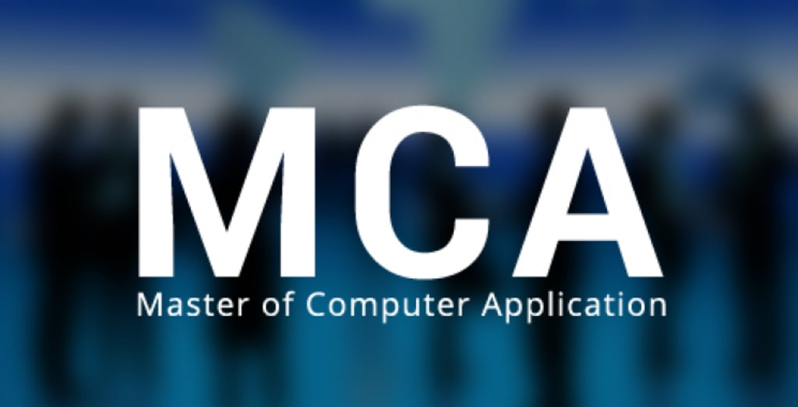
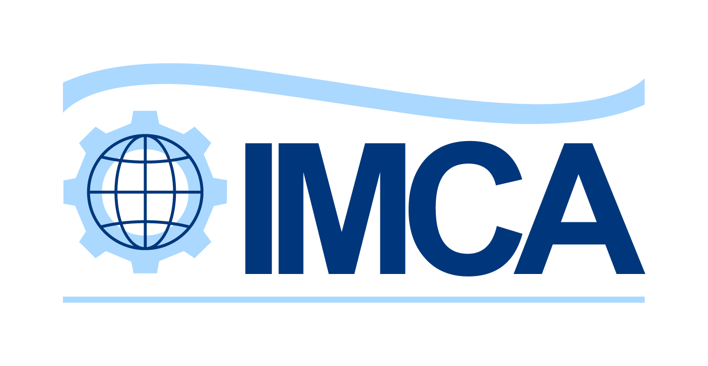

Courses

Bachelor of Computer Applications, it is an undergraduate academic
degree program
that focuses on computer applications and software development. BCA is a popular choice for students
who are interested in pursuing a career in the field of information technology and computer science.

Master of Computer Applications, it is a postgraduate academic
degree
program that builds on the foundational knowledge gained in undergraduate studies, particularly in
the field of computer applications and information technology.

Integrated Master of Computer Applications (IMCA) is a unique and
specialized
academic program that combines both undergraduate and postgraduate studies in computer applications.
This integrated program typically spans a duration of five years and is designed to provide students
with a seamless educational journey from the basics of computer science to advanced and specialized
topics.